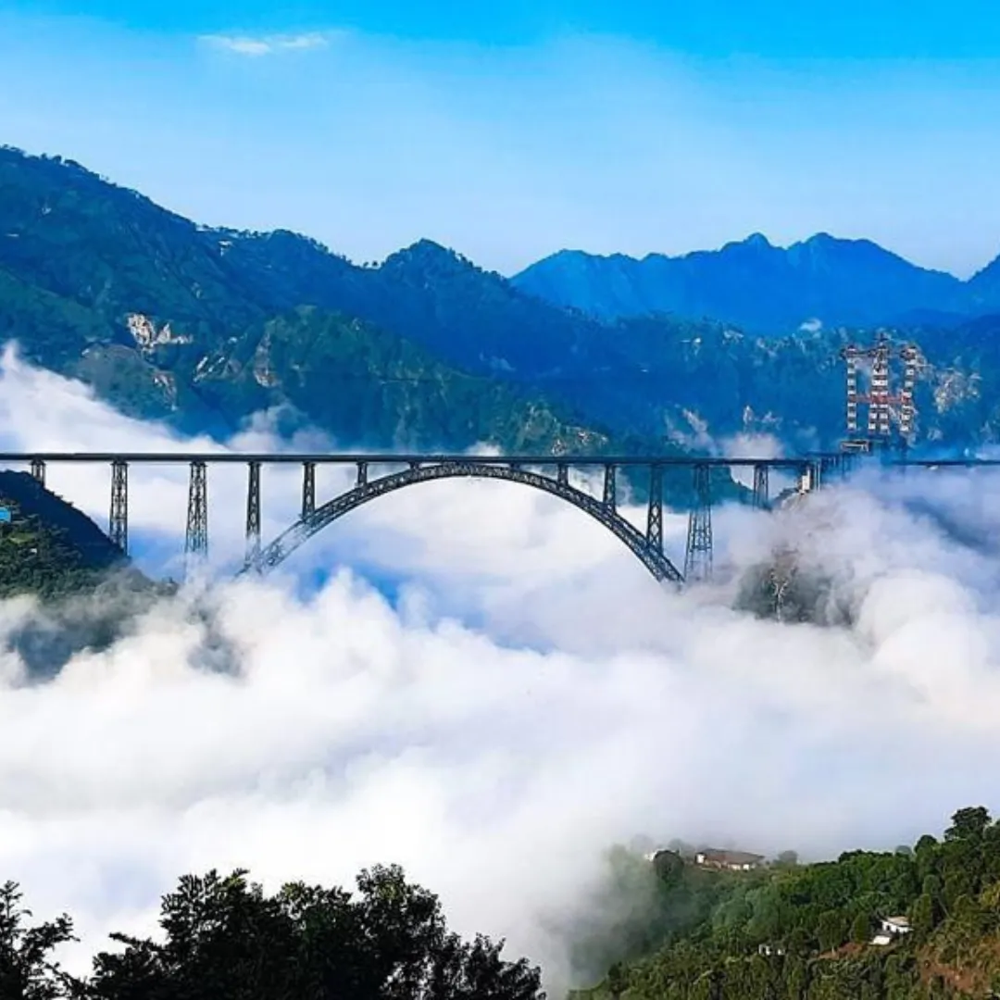

Jammu and Kashmir is a region administered by India as a union territory and consists of the southern portion of the larger Kashmir region, which has been the subject of a dispute between India and Pakistan since 1947 and between India and China since 1959

KASHMIR
The most picturesque valley of India, Kashmir is the heaven on earth that all of us need to visit at least once in a lifetime! The Kashmir Blog gives you an insight to all the rightful knowledge you need to know before planning a trip to Kashmir, one of the most beautiful places in the world! The timeless beauty of Kashmir, the photogenic highland mountains, the scenic drives through green meadows, the chenab rail bridge, and the serene lakes of Kashmir, discover all those and lots more through this Kashmir travel blog.
JAMMU
Jammu is a city in Indian-administered Jammu and Kashmir in the disputed Kashmir region. It is the winter capital of Jammu and Kashmir, which is an Indian-administered union territory. It is the headquarters and the largest city in Jammu district.

VAISHNO DEVI
One of the most important pilgrimage sites in India lies among the mountains and clouds. Located at Trikuta Mountains in Katra, Jammu & Kashmir. Vaishno Devi is the most popular and widely visited Hindu temple dedicated to the Hindu Goddess. In 2022, more than 91 lakh pilgrims visited the Vaishno Devi Mandir. These numbers do not lie and it has given a boost to Kashmir tourism. Being located in one of the most breathtaking locations, Vaishno Devi is among one of the best places to visit in Kashmir. In the middle of the journey to the Holy Shrine, the ArdhKuwari Temple cave is a must-visit. The pilgrimage to Vaishnodevi is considered incomplete till this temple is visited. It is widely believed that Mata Vaishnodevi spent 9 months in the ArdhKuwari Gufa for meditation before residing in the Vaishno Devi Bhavan and defeating the demon Bhairavnath.

DAL LAKE
In the tourist circuit, Dal Lake is synonymous with Srinagar. And a stay at the elegant houseboats of Dal Lake is a must to complete your experience in Srinagar. While staying at a houseboat is definitely one of the most unique experiences in Kashmir, Dal is much more than that.